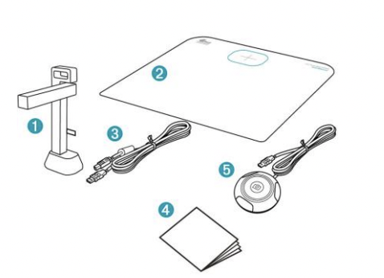

Set up
Take your laptop to a suitable large table in the herbarium, and plug in the scanner.
These steps should be followed every week on Wednesdays and Thursdays from 14:00 - 16:00. Alternatively, use your own schedule - but it is IMPORTANT to set aside regular time for this task.
Take your laptop to a suitable large table in the herbarium, and plug in the scanner.
Select 50 - 200 specimens from the same genus, put them in a pile next to the scanner.
Take a specimen from the pile and attach a QR code sticker.
What are QR codes and UUIDs, and why do we need them on our specimens?

Place the specimen on the scanner mat, and take a picture.
Place the specimen on the "Finished" pile. Repeat Steps 2 - 4 until all specimens are photographed, and then pack away the "Finished" pile of specimens.
Unplug the scanner and move your laptop to a location with internet access.
Open https://storage.gbif-no.sigma2.no/minio/tajik-img-processing/ or https://bit.ly/cesp-tajik. Log in using the username 'tajik-upload' and the password which has been provided to you.
Select the correct folder for your institution. Create a folder, name it according to the genus you have images for, e.g. "Vulpia". Keep this folder open, and then drag and drop your images into the folder.
Wait until the images have all loaded before closing your browser, or navigating away.
You have now completed the publication process.
We have a script which processes the images, renames them and moves them to a different your location. If you refresh the folder, you will see your images disappearing. When there is a problem with the image, we do not move it but keep in the folder to investigate. Please do not upload the same images twice if they seem to "disappear" from your folder.
Review the slides presented at the GBIF Tajikistan CESP training workshop (26 - 28 September 2022)
Go to https://gbif.org and search for your institution's name.
Alternatively, use these links:
Go to https://tajik.ipt.gbif.no/ (note, this is not the TEST IPT), and log in with your email address and username. You can go to "Manage resources", click on your dataset and edit your metadata as we showed you in the workshop My password is not working, help!
Yes, you should publish these records. However, your concerns are shared by many herbaria and museums around the world. GBIF has released a set of guidelines for publishing sensitive data https://docs.gbif.org/sensitive-species-best-practices/master/en/.
GBIF Tajikistan should publish a checklist of sensitive species of Tajikistan. Once this is in place, we can check species against this list and obscure the label, so it is not possible to view locality information.
Before we can scan any herbarium specimen, we need to stick on a QR code with unique identifier (UUID). This way we can be sure we are not scanning any specimen twice. It will also give us a way to quickly connect herbarium specimen with its published record when we want to use herbarium specimen for future studies.
QR codes are easily machine readable images containing data. In our case we want this data to be a unique identifier that never repeats so we use UUIDs. A UUID is a string of characters which is guaranteed to be unique.
Samariddin can print QR codes on sticky labels, and post them or take them to your institution. Then you just pull off a label and stick it onto the specimen. Alternatively, you can generate your own QR codes, print them and stick them onto the specimens.
The scanners used are IRIScan Desk 6 Pro. For this part of the process you'll need to be connected to the internet.
Your scanner should include following items: 
Connect the scanner (1) to your computer with provided USB cable (3) and connect the external capture button (5) to the scanner (1). Now place the scanner on the marked spot on the scanning pad (2)
NOTE: After connecting everything to your computer, there should be a red light visible on the external capture button (5). If this is not the case, try plugging the USB cable (3) to the different port in your computer.
After you set up your scanner you can start the scanning software (IriScan Desk Pro). Now we can setup the necessary settings to make our scanned herbarium specimens easily publishable. These settings should be needed only on the first start of the scanning software, but check them anyway - better safe then sorry. Here is an overview of the user interface:
Things to set:
Document modeCropping => AutomaticScan Mode => Single pageEdge Fixing => ONAuto Page Orientation => ONOutput Format => JPEGImage Settings => Color (Original)Resolution => Max resolution - 21MPOther relevant parts of the user interface: